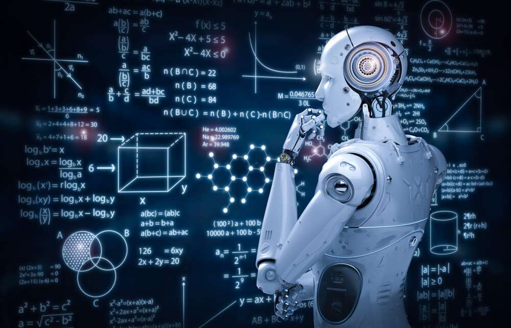

The history of artificial intelligence
The history of artificial intelligence began in ancient times , with
legends, stories, and rumors of artificial beings endowed with
intelligence or consciousness by skilled craftsmen. The seeds of modern
artificial intelligence were planted by classical philosophers who
attempted to describe the human thought process as a mechanical
manipulation of symbols. This work culminated in the invention of the
programmable digital computer in the 1940s, a machine that relied on the
core of logical-mathematical reasoning. This device and the ideas behind
it have inspired a handful of scientists to begin seriously discussing the
possibility of building an electronic brain . The field of artificial
intelligence research was established in a workshop on the campus of
Dartmouth College during the summer of 1956. Those who attended will
become leaders of AI research for several decades. Many of them predicted
that a machine with human intelligence would not exist in more than one
generation, and they got millions of dollars to make that vision a
reality. In the end, it became clear that they significantly
underestimated the difficulty of the project. In 1973, in response to
James Lighthill's criticism and constant pressure from Congress , the US
and British governments stopped funding undirected research in artificial
intelligence, and the difficult years that followed would be known as the
"AI Winter". Seven years later, the Japanese government's Japanese
initiative inspired governments and industry to supply AI projects with
billions of dollars, but by the late 1980s investors were disappointed by
the lack of power for computers (machines) and withdrew funding again.
Investment and interest in AI boomed in the early decades of the 21st
century, when machine learning was successfully applied to many problems
in academia and industry due to new methods, powerful computers, and
massive data sets.
Deep learning, big data, and artificial general intelligence: 2011-present
In the early decades of the twenty-first century, access to large amounts
of data (known as "big data"), cheaper and faster computers, and advanced
machine learning techniques were successfully applied to many problems in
all economic systems. In fact, the McKinsey Global Institute estimated in
its famous article “Big Data: The Next Frontier for Innovation,
Competition, and Productivity” that “by 2009, nearly all sectors of the US
economy had at least 200 terabytes of average stored data.” By 2016, the
market for AI-related products, hardware, and software had reached more
than $8 billion, and the New York Times reported that interest in AI had
gone “crazy.” Big data applications are beginning to reach other areas as
well, such as training models in ecology and for various applications in
economics. Advances in deep learning (particularly deep convolutional
neural networks and recurrent neural networks) have led to advances and
research in image and video processing, text analysis, and even speech
recognition.
deep learning
Deep learning is a branch of machine learning that depicts high-level
abstract models in data using a deep graph that has many levels of
processing. According to the general approximation theorem, depth is not
necessary for a neural network to be able to approximate continuous random
functions. However, there are many common problems with surface networks
(such as matching) that deep networks help to avoid. As such, deep neural
networks are able to realistically generate more complex models than their
surface counterparts. However, deep learning has its own problems. A
common problem in recurrent neural networks is the gradient fading
problem, where the gradient between layers gradually shrinks and literally
disappears as it is rounded to zero. There are several methods developed
to deal with this problem, such as long-term and short-term memory
modules. Sophisticated deep neural network architectures can sometimes
rival human accuracy in areas such as computer visualization, specifically
in such things as the MNIST database and traffic sign recognition.
Language processing engines powered by intelligent search engines can
easily beat humans in answering silly general questions (like the IBM
Watson computer system), and recent advances in deep learning have had
amazing results in competing with humans, in things like Go and Doom. (It
is a game that wins the first person shoots, which has sparked some
controversy).
Big Data
Big data refers to a set of data that cannot be captured, managed, and
processed by traditional software tools in a certain time frame. It is a
huge amount of decision-making capabilities, insight and process
improvement that require new processing models. In the age of Big Data Era
written by Victor Mayer Schoenberg and Kenneth Cook, big data means that
instead of random analysis (using a survey sample), all data is used for
analysis. Characteristics of Big Data (5V) (proposed by IBM): volume,
speed, versatility, value, and accuracy. The strategic importance of big
data technology is not to master big data information, but to specialize
in this important data . In other words, if big data is likened to an
industry, the key to profitability in that industry is to increase the
"processing power" of the data and to achieve the "additional value" of
the data through "processing".
Artificial general intelligence
Artificial intelligence is a branch of computer science that attempts to
understand the essence of intelligence and produce a new intelligent
machine that responds in a manner similar to human intelligence. Research
in this field includes robotics, speech recognition, image recognition,
natural language processing, and expert systems. Since the birth of
artificial intelligence, theory and technology have become more mature,
and areas of application have expanded. Technological products are
expected to beThe artificial intelligence of the future is a "container"
of human knowledge. AI can simulate the information process of human
consciousness and thinking. Artificial intelligence is not human
intelligence, but it can be similar to human thinking, and it can exceed
human intelligence. Artificial general intelligence is also referred to as
"strong AI", "full AI" or as the ability of a machine to implement
"general intelligent performance". Academic sources maintain "strong AI"
to refer to machines capable of feeling conscious.
